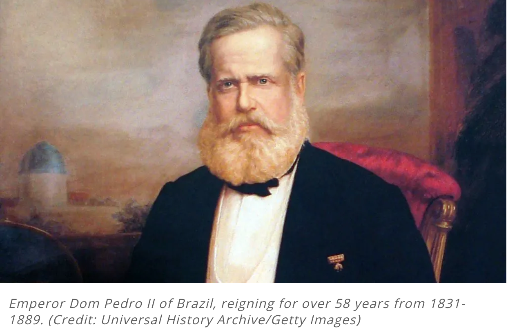
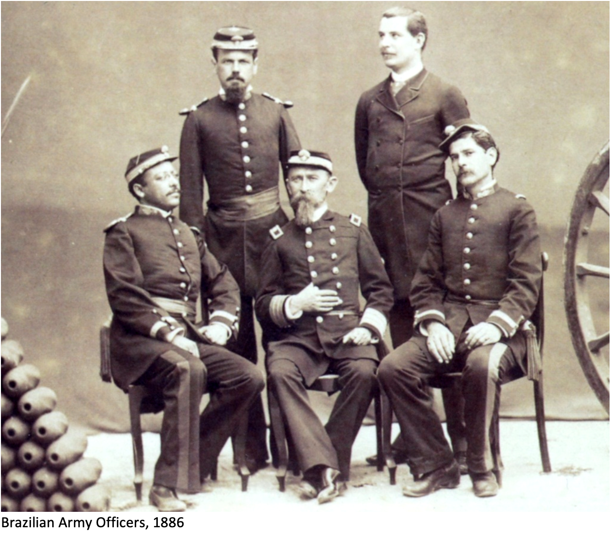
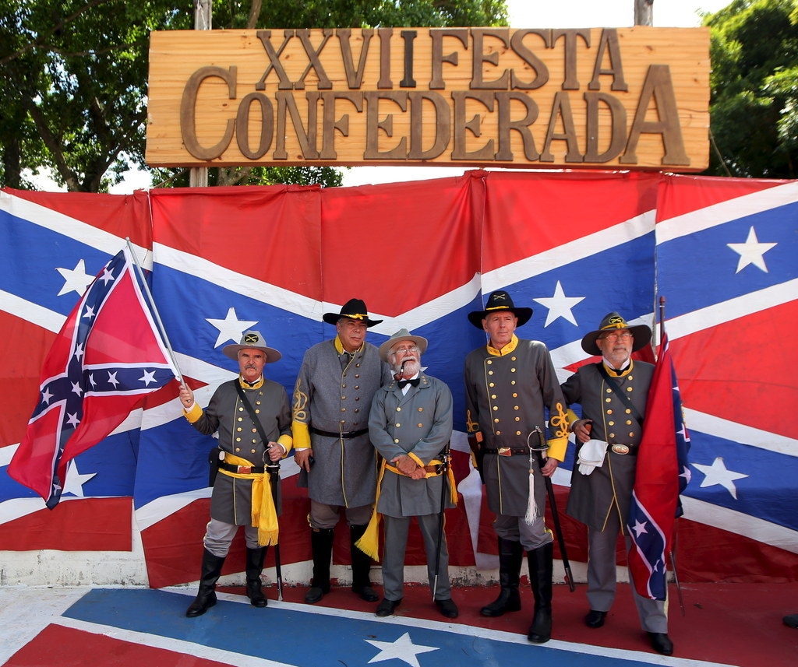

From Confederates to Confederados
A Look Into the Confederate Diaspora
The 1860s in the United States was a truly eventful decade, with the abolition movement, the Civil War, the victory of the union, and subsequently the Emancipation Proclamation formally outlawing slave labor and granting approximately 4 million enslaved people their freedom. In the devastated south, many confederates were unaccepting of the outcome of the war, and distraught by what their future would look like without slavery.
At this time Brazil was known as Império do Brasil (Empire of Brazil). The empire had gained its independence from the Kingdom of Portugal in the mid 1820's, had recently had a diplomatic victory over the British Empire, a military victory over Uruguay, and with a rapidly growing economy, was about to enter its “Golden Age”. Although the import of slaves was banned as a part of a treaty with the British Empire in 1826, wealthy, white Brazilians, mostly the descendants of European colonizers, still legally owned enslaved people, and were building the empire on slave labor.
The Empire of Brazil was gaining international recognition as a firmly established power in the Americas. In 1867 U.S. minister to Brazil James Watson Webb even claimed that “Brazil is, next to ourselves, the great power on the American continent".
So what happened with the unrepentant confederates? They fled.
Some southern confederates, unwilling to live under the federal government, pessimistic about their region's economic future, and desperate to escape Yankee rule, migrated to Mexico, Cuba, Venezuela, Honduras, Canada, and even Egypt, all of which were enticing for either agricultural or political reasons. Despite the benefits other countries offered, Brazil welcomed the greatest number of American migrants who would later become known as the confederados.
The confederate diaspora maintained strong cultural and sociological ties to the confederate south, and to this day is a testimony to the extended influence the United States has had over the Global South. U.S. post-Civil War migration to Brazil shows a different mechanism for how the US has a global impact: through the diaspora of people who bring their ideologies and understandings.
This website provides insight on how the confederate diaspora influenced Brazil and the impact that is still seen today.
Why Brazil?
Beginning in 1866, southerners who had begun thinking of fleeing the United States gave birth to multiple southern associations concerned with scouting out territory that could be suitable for colonization, and where they could continue living how they wanted to. Because the Empire of Brazil was establishing itself as a promising stable country, there was special interest in exploring their possibilities here. These associations would send representatives who would then write reports on their findings. They would report on the geography of the area, the weather conditions, soils, and agricultural potential. The state of São Paulo became especially popular, with as many as twenty different representative agents being sent there on behalf of Southern associations. These agents often were popular explorers, military officers, or held the title of doctor, and their findings and opinions were highly respected by many. For example, Gen. William Wallace Wood toured Brazil on behalf of approximately 600 planters from Mississippi and Louisiana. Some of the agents who wholeheartedly believed migration was the only answer to the defeat of the confederacy would purchase land while on their expeditions, and network with Brazilian statesmen, giving them even more incentive to promote a successful confederate migration to Brazil. Others who supported this migration negotiated government subsidies to facilitate the move.
Incentives
Although the Empire of Brazil was not the only country to promote southern migration, it did offer the most support and had the best incentives. Dom Pedro II, the emperor, took personal interest in this migration and in those who moved to Brazil. The agents who toured the country were treated very well, often met with interpreters, music, letters of introduction, guides, and festivities. The southerners who were convinced to move were offered land for as little as twenty-two cents an acre, help with transportation and accommodations. Dom Pedro II also promised them easy citizenship, construction of infrastructure to facilitate agriculture and marketing of crops, and would let them stay at a large hotel in Rio de Janeiro upon arrival. Additionally, Brazil not only retained the institution of slavery, but also had “cheaper rates” when it came to the purchase of slaves than the United States did. This was a major factor in the decision of many who were seeking to flee.
Many families who decided to migrate were not plantation owners in the Southern United States, so the possibility of owning many acres of crops, enslaved people, and achieving a higher socio-economic status was enticing. The same was the case for middle- and low-class white southerners who saw this as an opportunity to truly achieve the confederate dream. Additionally, many southerners feared that not only would they have to give up their confederate values and identity, but they were also concerned that they would be tried for treason. In Brazil their identity could live on, and so could they without the fear of trial.
There is no accurate count of the exact number of Southerners who decided to move to Brazil. Some Port records from Rio de Janeiro indicate that roughly 20,000 Americans entered the country between 1865 to 1885, but some researchers argue that many counted in that figure may have been explorers who completed more than one trip, travelers who decided to settle elsewhere, or southerners who had to complete many trips before formally settling in Brazil. More conservative figures indicate that the number was more likely between 6,000 and 10,000. Many of which returned disillusioned to the United States within the first decade. By 1873 the largest colony had an estimate of fifty families.
Race Relations
Brazil, like the other countries who participated in the Trans-Atlantic Slave Trade, was built on the enslavement and ongoing oppression of millions of Africans and Indigenous peoples. Of the estimated 12 million enslaved Africans who were taken to the New World, roughly 5.5 million were forcibly imported to Brazil. Over the course of its history, Brazil took more than ten times as many enslaved people as the United States. It was the biggest slave nation in the Americas, and the last country in the Western Hemisphere to abolish the institution of slavery.
During the 1860s, most of the Brazilian states had a Black majority, and the Empire and the Brazilian elites were starting to become concerned about their future and the future of the nation. By encouraging emigration to their land, the Brazilian Empire sought to accomplish two things: “purifying the Brazilian race” and introducing new, progressive agricultural techniques and machinery. It became public policy in Brazil to whiten society by bringing in Europeans and European-descended Americans.
The issue of Racial Mixing
Race relations were not what many Americans expected. They knew of the existence of a racial hierarchy in Brazil, but many were unaware of how different race relations were compared to those in the Southern United States. The difference in perception of racial mixing was especially concerning to the confederates, to say the least.
The United States had the “one drop” rule, which ensured that any person born to a Black enslaved woman would also be considered Black, and would also grow up to become enslaved, regardless of the race of the biological father, grandfather, and so forth. “Mixing” with a Black person meant ruining the white race and making it impure. Brazil had a different take on racial mixing and never had a law against miscegenation. It was quite the opposite, white genes and blood were also seen as superior, and by mixing with a non-white person you were seen to be helping “better the race”. That's why Brazil created these campaigns for white Europeans and white Americans immigrants. Brazilian elites had a plan to make the country more “white looking” through miscegenation between white people and those of Indigenous and African descent.
This led to a great amount of people being of mixed-race and to the creation of multiple different categorizations for individuals depending on what percentage of each race they were, and what they were mixed with. The main four ethnic categories were Branco, (White), Preto (Black), Pardo (Brown), and Indio (indigenous). From those categories derived: caboclos (descendants of Whites and Indians), mulattoes (descendants of Whites and Blacks) and cafuzos (descendants of Blacks and Indians). The descendants of caboclos and mulattoes also fell into the cafuzos category. At times mestiço was used to indicate multiracialism. Because of the lack of anti-miscegenation laws, and the encouragement to “whiten” the Brazilian race, many of these mestiço descendants were free, some even considered white in Brazilian categorization. To the Americans these individuals were not considered white, and they were surprised not only by their freedom, but also by the fact that a lot of these people were occupying important roles in the government, like counselors over the Brazilian empire, they were also occupying high positions in the Brazilian army, they were doctors, and they were lawyers. This was highly disappointing to the southern emigrants, who strongly opposed racial mixing. Their opposition to this was so strong, some southern travelers would "change their mind" and give up on fleeing to Brazil after becoming aware of the amount of racial mixing, the free Afro Brazilian population, and the number of African descendants who were citizens.
Social Impacts
As mentioned in the “Race Relation” section of this website, one of the main goals the Brazilian Empire sought to accomplish by encouraging the Southern Americans to emigrate was to have them introduce new techniques and machinery that would boost their agriculture. To the delight of Emperor Dom Pedro II, this was exactly what happened. Periphery planters supplied raw materials to the industries, and the Confederados brought with them the metal-tipped plow, the kerosene lamp, simplified procedures for surveying land, a process for distilling sugar cane into rum, and they introduced four new crops: upland cotton, rattle-snake watermelons, grapes, and pecans. Not all of these tools and crops worked or thrived immediately, it was working together with the Brazilians that led to the success of the crops, and adapting the machinery to meet their needs. Many Confederados who had been farmers and planters were hired by fazenda owners to teach and demonstrate the use of the American plow. Fazendas were enormous farms, similar to the large plantations of the South.
The confederados ultimately made up a very small fraction of all those who immigrated to Brazil during the 19th Century, yet their descendants claim that they introduced innovations that culturally and economically transformed the area. They claim that the confederados had an influence that marked educational and religious institutions. Some scholars claim that those economic transformations would have happened anyway, and that the impact of the southerners was amplified by effects of the rapid modernization and growing economy that was already occurring in Brazil.
The Brazilian society was indeed influenced by American systems of education, as well as religion. Yet this influence, although American, was not brought solely by the confederates themselves. It was American missionaries, majorly protestant, who built schools and established rigorous academic practices, and channeled American, Western philosophies and ethics into Brazilian societies. In working together with missionaries, the confederados established their religion, and built their own cemeteries and chapels.
The biggest impact of the confederate diaspora was cultural. It came from their strong cultural and ideological ties to their confederate south identity. By fleeing the United States, the confederados were able to maintain this identity, hold on to their beliefs and values, and continue their practices, including exploiting slave labor, without any disturbance from the Brazilian Government. The Confederados eventually started to pick-and-choose parts of their identity, holding on to some aspects, and completely ignoring others. Robert C. Norris, a prominent confederado settler once said “I'm not american anymore!” to some Yankees, and his son Robert Clay Norris, who was born in Brazil said “I'll give my allegiance only to the flag of the south!”. This was a sentiment shared by many confederados, yet many still identified with the American founding fathers of the late 18th Century, claiming what they did as part of their own history.
Descendants of the Confederados claim that they brought to Brazil their American work ethic, and the expression “Time is Money”. They say the confederados were considered workaholics, yet their mentality influenced Brazilian workers and encouraged them to become champions of efficiency and speed. José Arthur Rios, brazilian scholar, believed that the confederados “Enriched our society with their progressive mind, their capacity for action, and their technical competence, and perhaps in the hearts of their São Paulo descendants has filtered a little of that love of freedom, an American tradition, and that pride of the old planter that is a Southern tradition.”
In the city of Americana, named after the emigrants, some confederate traditions are alive and well. This is discussed in the “Today” section of this website.
What it looks like today
Although the confederados made a great effort to remain separate from the local cultures, and draw a line between them and the Brazilians, those who stayed in Brazil did eventually assimilate into Brazilian society. A descendant of this community states “the first and second generations spoke Portuguese but few married Brazilians, and the third generations and older members of the fourth have clung together somewhat as a group, but the younger fourth and fifth generation “think Brazilian and marry Brazilians”, so the line is fading. With the assimilation also came an increased tolerance of other races, and of racial mixing.
Of all of the confederate settlements, those in the municipality of Santa Bárbara d'Oeste, today the city of Americana, became quite significant. It is in the city of Americana that the confederate traditions are still seen. It is here that the annual Festa Confederada Takes place.
Descendants of confederados claim that the confederate flag lost significance as a symbol of white supremacy, and that they see it as heritage not hate. During the celebrations, this flag is flown with pride, and is seen everywhere. Attendants often wear traditional antebellum-era outfits and sport the gray confederate soldier uniform. There are period themed dances, music, and plenty of southern traditional food.
